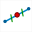
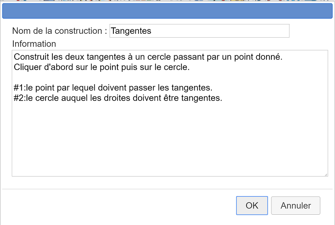

Deuxième exemple de création d'une construction.
Nous désirons créer une construction créant les deux tangentes à un cercle menées d'un point extérieur à ce cercle.
Commencez par utiliser l'icône  pour créer une nouvelle figure sans longueur unité.
pour créer une nouvelle figure sans longueur unité.
A l'aide de l'icône  créez trois points libres que nous appellerons O, A et M (dans la pratique inutile de les nommer).
créez trois points libres que nous appellerons O, A et M (dans la pratique inutile de les nommer).
A l'aide de l'icône  , créez le cercle de centre O et passant par A.
, créez le cercle de centre O et passant par A.
Notre construction a besoin d'utiliser le centre du cercle mais ne doit pas utiliser le point O. En effet les objets finaux ne doivent être construits qu'avec le cercle et le point M. Ils ne doivent pas utiliser le point O qui a servi à créer le cercle.
Utilisez l'icône  pour masquer le point O.
pour masquer le point O.
Utilisez l'icône  située à droite de la barre d'outils déroulante et choisissez Créer le centre d'un cercle puis cliquez sur le cercle.
située à droite de la barre d'outils déroulante et choisissez Créer le centre d'un cercle puis cliquez sur le cercle.
Un nouveau point apparaît.
Utilisez l'icône

pour créer le milieu du segment joignant M au centre du cercle. Nous l'appellerons I.Créez maintenant le cercle de centre I et passant par O.
Utilisez l'icône  (barre d'outils des points) pour créer l'intersection des deux cercles. Deux points apparaissent que nous appellerons P et Q.
(barre d'outils des points) pour créer l'intersection des deux cercles. Deux points apparaissent que nous appellerons P et Q.
Utilisez l'icône  pour créer les droites (MP) et (MQ). Ce sont nos deux tangentes.
pour créer les droites (MP) et (MQ). Ce sont nos deux tangentes.
Utilisez si nécessaire l'icône  pour faire apparaître les outils supplémentaires et cliquez sur l'icône
pour faire apparaître les outils supplémentaires et cliquez sur l'icône  . Choisissez Choix des objets sources graphiques.
. Choisissez Choix des objets sources graphiques.
Cliquez d'abord sur M puis sur le premier cercle. Cliquez sur le bouton STOP rouge en bas et à droite de la fenêtre
Cliquez à nouveau sur l'icône  et choisissez Choix des objets finaux graphiques.
et choisissez Choix des objets finaux graphiques.
Cliquez sur les deux tangentes puis sur le bouton STOP rouge.
Il reste à finaliser la construction.
Utilisez l'icône  puis Finir la construction en cours.
puis Finir la construction en cours.
Une boîte de dialogue s'ouvre. Remplissez-la comme ci-dessous :

Les deux premières lignes servent à donner des indications sur l'utilité de la construction.
Les deux dernières servent à donner des indications à l'utilisateur lorsqu'il sera en train de désigner les deux objets sources.
Validez. La construction est créée. Si vous enregistrez votre figure la construction sera enregistrée avec la figure.
Nous allons maintenant enregistrer notre construction.
Utilisez pour cela le menu Construction - Enregistrer une construction de la figure dans un fichier.
Une boîte de dialogue s'ouvre vous présentant les constructions contenues dans la figure.
Cliquez sur Tangente puis sur Enregistrer.
Une boîte de dialogue classique d'enregistrement s'ouvre.
Choisissez le nom du fichier (le nom de la macro par défaut) et l'emplacement de votre choix puis validez.
Utilisons maintenant cette construction dans une nouvelle figure.
Créez une nouvelle figure.
Créez un cercle et un point extérieur à ce cercle.
Utilisez l'icône  et choisissez Implémenter une construction depuis un fichier.
et choisissez Implémenter une construction depuis un fichier.
Une boîte de dialogue s'ouvre. Rejoignez le dossier dans lequel vous avez enregistré la construction précédente et chargez le fichier mgc correspondant.
Maintenant utilisez à nouveau l'icône  et choisissez Implémenter une construction de la figure.
et choisissez Implémenter une construction de la figure.
Sélectionnez la macro que vous venez d'importer et cliquez sur le bouton Implémenter.
Il vous est demandé de cliquer sur le point par lequel doivent passer les tangentes. Cliquez sur le point désiré.
Il vous est ensuite demandé de cliquer sur le cercle. Cliquez sur le cercle.
Vos tangentes apparaissent.